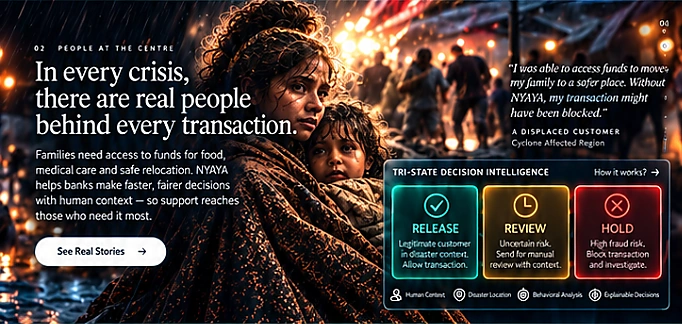

DISASTER-AWARE BANKING INTELLIGENCEWhen the world
When the world
is in crisis,
people still
need banking.
NYAYA helps banks make smarter fraud decisions during disasters — protecting genuine customers while stopping opportunistic fraud.
Explore the story ↓RELEASEPay in full
REVIEWStipend + escrow
HOLDBlock high-risk payments
01 / INTELLIGENCE IN CONTEXTDisasters create
Disasters create
chaos. Our intelligence
creates clarity.
Disaster context, payment behaviour and recipient risk inform explainable banking decisions — so protection can reach people who need it.
DISASTER CONTEXT
Illustrative region
Illustrative region
PAYMENT PATTERNS
Context-aware decisions
Context-aware decisions
RECIPIENT RISK
Mule-ring screening
Mule-ring screening
Context-aware analysisExplainable outcomesHuman review
Illustrative map · not a geographic monitoring service
02 / PEOPLE AT THE CENTREIn every crisis,
In every crisis,
there are real people
behind every transaction.
Families need access to food, medicine and safe relocation. NYAYA weighs the harm of blocking a genuine payment.
THREE OUTCOMES. ONE HUMAN CONTEXT.
Illustrative people · actual decisions come from the engineSelect an outcome to understand the protocol.
NYAYA / DECISION INTELLIGENCERecorded evidence available in dashboard
03 / DECISIONS. REAL CONSEQUENCES.A command center
A command center
for a more resilient
financial world.
Explore the existing NYAYA engine, its explanations, policy trade-offs and audit trail.
INDEPENDENT SYNTHETIC SUITEOpen dashboard for measured resultsVictims left with ₹0 · recorded evidence
HONEST LIMITATIONS
Fairness target not met. NNPA is slower overall at this model size. Granite wording is an unverified draft.
04 / A MORE RESILIENT TOMORROWSmarter decisions today.
Smarter decisions today.
Stronger communities
tomorrow.
Banking intelligence designed around the people behind every payment.
PEOPLE
PREPARE
ADAPT
RECOVER
TOGETHER.
Symbolic financial connections · synthetic evaluation dataPREPARE
ADAPT
RECOVER
TOGETHER.